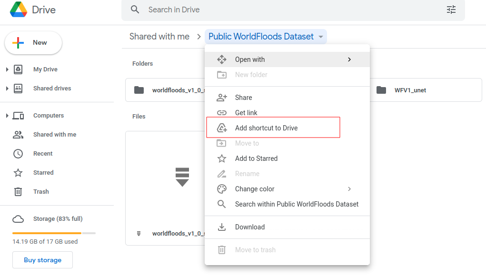

Run inference#
Last Modified: 17-03-2022
Authors: Sam Budd, Gonzalo Mateo-García
Run inference on Sentinel-2 images using a trained model
This notebook shows how to load a trained model from a experiment config file. With that model we will then make predictions on new Sentinel-2 images.
Note: If you run this notebook in Google Colab change the running environment to use a GPU.
import os
Step 0: Download the necessary data#
In order to run this tutorial you need to download the necesary data (pretrained models and GeoTIFF files to run inference). For this tutorial we will get it from our public Google Drive folder. For other alternatives see the download WorldFloods documentation.
Step 0a: mount the Public folder if you are in Google Colab#
If you’re running this tutorial in Google Colab you need to add a ‘add a shortcut to your Google Drive’ from the public Google Drive folder.

Then, mount that directory with the following code:
try:
from google.colab import drive
drive.mount('/content/drive')
assert os.path.exists('/content/drive/My Drive/Public WorldFloods Dataset'), "Add a shortcut to the publice Google Drive folder: https://drive.google.com/drive/u/0/folders/1dqFYWetX614r49kuVE3CbZwVO6qHvRVH"
google_colab = True
path_to_dataset_folder = '/content/drive/My Drive/Public WorldFloods Dataset'
dataset_folder = os.path.join(path_to_dataset_folder, "worldfloods_v1_0_sample")
experiment_name = "WFV1_unet"
folder_name_model_weights = os.path.join(path_to_dataset_folder, experiment_name)
except ImportError as e:
print(e)
print("Setting google colab to false, it will need to install the gdown package!")
google_colab = False
No module named 'google.colab'
Step 0b: Download the data with the gdown package if you are in a jupyter notebook#
Download the data using the gdown package (if not installed run: pip install gdown).
# Download pre-trained model from Google Drive folder
if not google_colab:
experiment_name = "WFV1_unet"
# Download val folder
path_to_dataset_folder = '.'
dataset_folder = os.path.join(path_to_dataset_folder, "worldfloods_v1_0_sample")
val_folder = os.path.join(dataset_folder, "val")
folder_name_model_weights = os.path.join(path_to_dataset_folder, experiment_name)
if not os.path.exists(folder_name_model_weights):
import gdown
gdown.download_folder(id="1Oup-qVD1U-re3lIQkw7TOKJsdu90blsk", quiet=False, use_cookies=False,
output=folder_name_model_weights)
if not os.path.exists(val_folder):
import gdown
os.makedirs(val_folder, exist_ok=True)
# https://drive.google.com/drive/folders/1ogcNupGr0q6nLwS7BBQQ8PzILyONah12?usp=sharing
gdown.download_folder(id="1ogcNupGr0q6nLwS7BBQQ8PzILyONah12", quiet=False, use_cookies=False,
output=val_folder)
Retrieving folder list
Processing file 1vk48dyx5dQ9JzDmx9m8z-ezNqcmA7kJG config.json
Processing file 1mDQUzVL45_GTiILSDNeb-UN8xNROsKyC model.pt
Building directory structure completed
Retrieving folder list completed
Building directory structure
Downloading...
From: https://drive.google.com/uc?id=1vk48dyx5dQ9JzDmx9m8z-ezNqcmA7kJG
To: /home/gonzalo/git/ml4floods/jupyterbook/content/ml4ops/WFV1_unet/config.json
100%|███████████████████████████████████████████████████████████████████████████████████████████████████████████████████████████████████████████████████████████████████| 1.20k/1.20k [00:00<00:00, 629kB/s]
Downloading...
From: https://drive.google.com/uc?id=1mDQUzVL45_GTiILSDNeb-UN8xNROsKyC
To: /home/gonzalo/git/ml4floods/jupyterbook/content/ml4ops/WFV1_unet/model.pt
100%|██████████████████████████████████████████████████████████████████████████████████████████████████████████████████████████████████████████████████████████████████| 31.2M/31.2M [00:00<00:00, 46.3MB/s]
Download completed
Step 1: Get config#
from ml4floods.models.config_setup import get_default_config
config_fp = os.path.join(folder_name_model_weights, "config.json")
config = get_default_config(config_fp)
# The max_tile_size param controls the max size of patches that are fed to the NN. If you're in a memory contrained environment set this value to 128
config["model_params"]["max_tile_size"] = 128
Loaded Config for experiment: WFV1_unet
{ 'data_params': { 'batch_size': 32,
'bucket_id': 'ml4floods',
'channel_configuration': 'all',
'filter_windows': False,
'input_folder': 'S2',
'loader_type': 'local',
'num_workers': 8,
'path_to_splits': '/worldfloods/public',
'target_folder': 'gt',
'test_transformation': { 'normalize': True,
'num_classes': 3,
'totensor': True},
'train_test_split_file': 'worldfloods/public/train_test_split.json',
'train_transformation': { 'normalize': True,
'num_classes': 3,
'totensor': True},
'window_size': [256, 256]},
'deploy': False,
'experiment_name': 'WFV1_unet',
'gpus': '0',
'model_params': { 'hyperparameters': { 'channel_configuration': 'all',
'label_names': [ 'land',
'water',
'cloud'],
'lr': 0.0001,
'lr_decay': 0.5,
'lr_patience': 2,
'max_epochs': 25,
'max_tile_size': 256,
'model_type': 'unet',
'num_channels': 13,
'num_classes': 3,
'val_every': 1,
'weight_per_class': [ 1.93445299,
36.60054169,
2.19400729]},
'model_folder': 'gs://ml4cc_data_lake/0_DEV/2_Mart/2_MLModelMart',
'path_to_weights': 'checkpoints/',
'test': False,
'train': True,
'use_pretrained_weights': False},
'resume_from_checkpoint': False,
'seed': 12,
'test': False,
'train': False,
'wandb_entity': 'ml4floods',
'wandb_project': 'worldfloods'}
Step 2: Load pre-trained model#
from ml4floods.models.model_setup import get_model
model_folder = os.path.dirname(folder_name_model_weights)
if model_folder == "":
model_folder = "."
config["model_params"]['model_folder'] = model_folder
config["model_params"]['test'] = True
model = get_model(config.model_params, experiment_name)
model.eval()
model.to("cuda") # comment this line if your machine does not have GPU
Loaded model weights: ./WFV1_unet/model.pt
WorldFloodsModel(
(network): UNet(
(dconv_down1): Sequential(
(0): Conv2d(13, 64, kernel_size=(3, 3), stride=(1, 1), padding=(1, 1))
(1): ReLU(inplace=True)
(2): Conv2d(64, 64, kernel_size=(3, 3), stride=(1, 1), padding=(1, 1))
(3): ReLU(inplace=True)
)
(dconv_down2): Sequential(
(0): Conv2d(64, 128, kernel_size=(3, 3), stride=(1, 1), padding=(1, 1))
(1): ReLU(inplace=True)
(2): Conv2d(128, 128, kernel_size=(3, 3), stride=(1, 1), padding=(1, 1))
(3): ReLU(inplace=True)
)
(dconv_down3): Sequential(
(0): Conv2d(128, 256, kernel_size=(3, 3), stride=(1, 1), padding=(1, 1))
(1): ReLU(inplace=True)
(2): Conv2d(256, 256, kernel_size=(3, 3), stride=(1, 1), padding=(1, 1))
(3): ReLU(inplace=True)
)
(dconv_down4): Sequential(
(0): Conv2d(256, 512, kernel_size=(3, 3), stride=(1, 1), padding=(1, 1))
(1): ReLU(inplace=True)
(2): Conv2d(512, 512, kernel_size=(3, 3), stride=(1, 1), padding=(1, 1))
(3): ReLU(inplace=True)
)
(maxpool): MaxPool2d(kernel_size=2, stride=2, padding=0, dilation=1, ceil_mode=False)
(dconv_up3): Sequential(
(0): Conv2d(768, 256, kernel_size=(3, 3), stride=(1, 1), padding=(1, 1))
(1): ReLU(inplace=True)
(2): Conv2d(256, 256, kernel_size=(3, 3), stride=(1, 1), padding=(1, 1))
(3): ReLU(inplace=True)
)
(dconv_up2): Sequential(
(0): Conv2d(384, 128, kernel_size=(3, 3), stride=(1, 1), padding=(1, 1))
(1): ReLU(inplace=True)
(2): Conv2d(128, 128, kernel_size=(3, 3), stride=(1, 1), padding=(1, 1))
(3): ReLU(inplace=True)
)
(dconv_up1): Sequential(
(0): Conv2d(192, 64, kernel_size=(3, 3), stride=(1, 1), padding=(1, 1))
(1): ReLU(inplace=True)
(2): Conv2d(64, 64, kernel_size=(3, 3), stride=(1, 1), padding=(1, 1))
(3): ReLU(inplace=True)
)
(conv_last): Conv2d(64, 3, kernel_size=(1, 1), stride=(1, 1))
)
)
from ml4floods.models.model_setup import get_model_inference_function
inference_function = get_model_inference_function(model, config,apply_normalization=True)
Getting model inference function
Step 3: Run Inference#
The inference_function let us run the model on large tiles. For doing this it follows the tiling and stiching strategy
described in Huang et al. 2019.
In the next cell we load a GeoTIFF Sentinel-2 from the WorldFloods val dataset and we run the segmentation model on it. Afterwards we load the ground truth and the JRC permanent water layer GeoTIFF and plot it for comparison purposes.
from ml4floods.models.model_setup import get_channel_configuration_bands
from ml4floods.visualization import plot_utils
from ml4floods.data.worldfloods import dataset
import torch
import matplotlib.pyplot as plt
channel_configuration = config.model_params.hyperparameters.channel_configuration
# dataset_folder = gs://ml4cc_data_lake/2_PROD/2_Mart/worldfloods_v1_0/
event_id = "RS2_20161008_Water_Extent_Corail_Pestel.tif"
tiff_s2 = os.path.join(dataset_folder, "val", "S2", event_id)
tiff_gt = os.path.join(dataset_folder, "val", "gt", event_id)
tiff_permanentwaterjrc = os.path.join(dataset_folder, "val", "PERMANENTWATERJRC", event_id)
window = None
channels = get_channel_configuration_bands(channel_configuration)
# Read inputs
torch_inputs, transform = dataset.load_input(tiff_s2, window=window, channels=channels)
# Make predictions
outputs = inference_function(torch_inputs.unsqueeze(0))[0] # (num_classes, h, w)
prediction = torch.argmax(outputs, dim=0).long() # (h, w)
# Mask invalid pixels
mask_invalid = torch.all(torch_inputs == 0, dim=0)
prediction+=1
prediction[mask_invalid] = 0
# Load GT and permanent water for plotting
torch_targets, _ = dataset.load_input(tiff_gt, window=window, channels=[0])
torch_permanent_water, _ = dataset.load_input(tiff_permanentwaterjrc, window=window, channels=[0])
# Plot
fig, axs = plt.subplots(2,2, figsize=(16,16))
plot_utils.plot_rgb_image(torch_inputs, transform=transform, ax=axs[0,0])
axs[0,0].set_title("RGB Composite")
plot_utils.plot_swirnirred_image(torch_inputs, transform=transform, ax=axs[0,1])
axs[0,1].set_title("SWIR1,NIR,R Composite")
plot_utils.plot_gt_v1_with_permanent(torch_targets, torch_permanent_water, window=window, transform=transform, ax=axs[1,0])
axs[1,0].set_title("Ground Truth with JRC Permanent")
plot_utils.plot_gt_v1(prediction.unsqueeze(0),transform=transform, ax=axs[1,1])
axs[1,1].set_title("Model prediction")
plt.tight_layout()
Step 4: Vectorise the water masks and plot them#
In the code bellow data_out is a GeoDataFrame object. You can save it as a shapefile with save_file.
from ml4floods.models import postprocess
from ml4floods.visualization import plot_utils
import geopandas as gpd
import numpy as np
prob_water_mask = outputs[1].cpu().numpy()
binary_water_mask = prob_water_mask>.5
geoms_polygons = postprocess.get_water_polygons(binary_water_mask, transform=transform)
data_out = gpd.GeoDataFrame({"geometry": geoms_polygons, "id": np.arange(len(geoms_polygons))})
fig, ax = plt.subplots(1,1, figsize=(12, 12))
data_out.plot("id",legend=True,categorical=True,ax=ax,facecolor="None",edgecolor=None,linewidth=3)
plot_utils.plot_rgb_image(torch_inputs, transform=transform, ax=ax, alpha=.6,
channel_configuration=channel_configuration)
<AxesSubplot:>